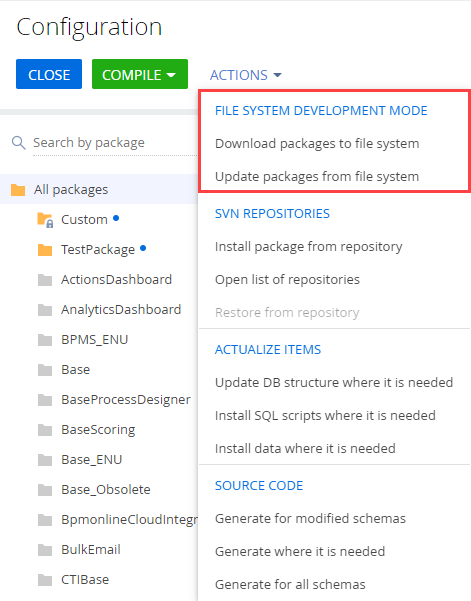
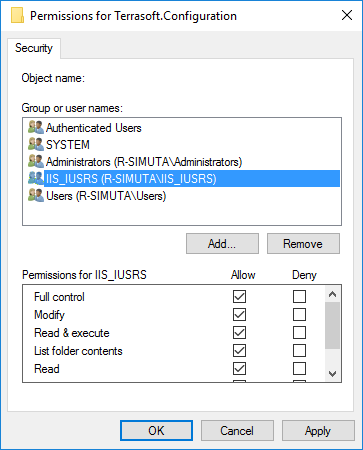
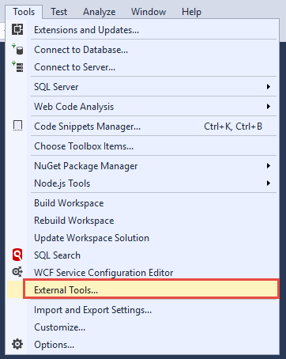
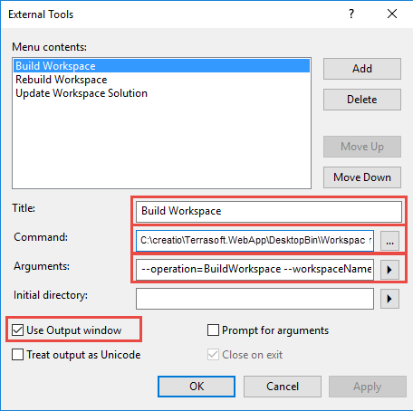
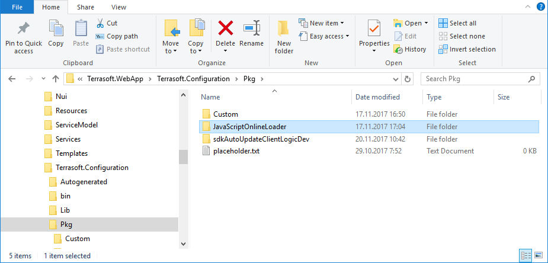
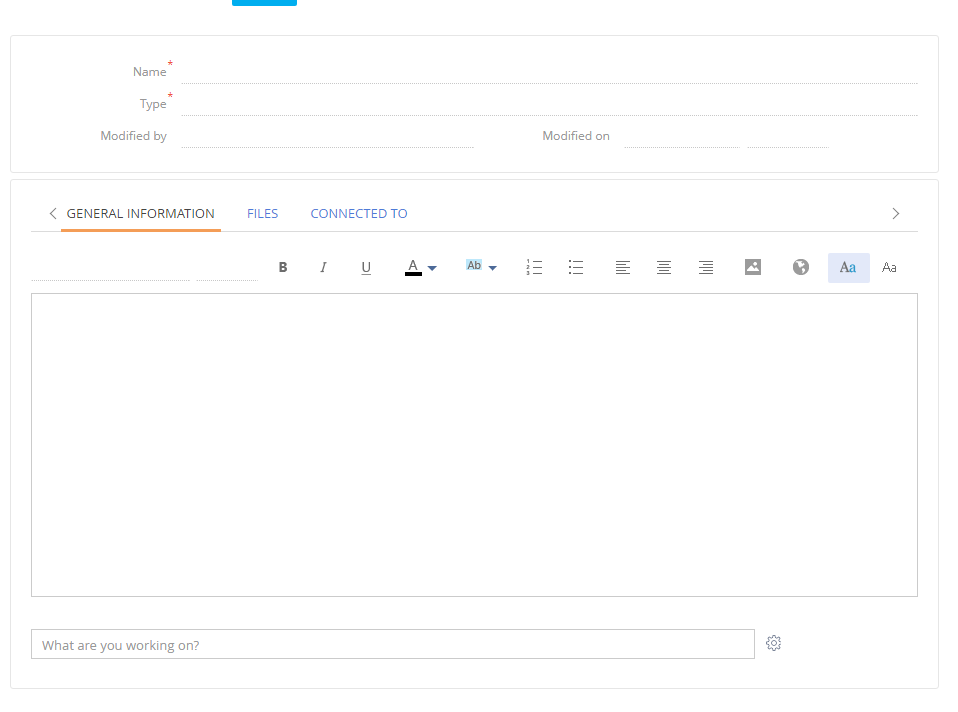

Для увеличения производительности разработки решений Creatio можно использовать внешние интегрированные среды разработки (IDE, Integrated Development Environment), например, Visual Studio, WebStorm и т. д.
Внешние IDE позволяют не только создавать, редактировать и компилировать программный код решения Creatio, но и выполнять его отладку, вести командную разработку, использовать системы управления версиями и многое другое.
Разработка в файловой системе
Для использования внешних IDE Creatio предоставляет механизм разработки пакетов конфигурации в файловой системе.
Режим разработки в файловой системе (РФС) позволяет:
- выгружать содержимое пакетов из базы данных в файлы;
- изменять исходный код схем с помощью IDE;
- загружать измененные пакеты обратно в базу данных.
Особенности разработки в файловой системе:
- При включенном режиме РФС полноценная разработка поддерживается только для схем типа Исходный код (Source code) и Клиентский модуль (ClientUnitSchema).
Для других элементов пакетов, например, ресурсов или SQL-скриптов, действуют следующие правила:
- При выгрузке из базы данных в файловую систему элементы пакетов, хранящиеся в базе данных, заменят элементы в файловой системе. Схемы типа Исходный код (Source code) и Клиентский модуль (ClientUnitSchema) заменены не будут.
- При загрузке в базу данных элементов пакетов из файловой системы они заменят элементы в базе данных. Но приложение все равно будет работать со схемами типа Исходный код (Source code) и Клиентский модуль (ClientUnitSchema) из файловой системы.
- Интеграция с системой контроля версий (SVN) при включенном режиме РФС выполняется не встроенным в Creatio механизмом работы с SVN, а сторонними средствами.
Чтобы облегчить работу со связанными пакетами, в разделе Конфигурация (Configuration) оставлена возможность установки пакетов из хранилища SVN. Для установки единичных пакетов рекомендуется использовать сторонние утилиты, например, TortoiseSVN.
Чтобы использовать встроенные возможности работы с хранилищем SVN, необходимо отключить режим разработки в файловой системе.
Настроить Creatio для работы в файловой системе
- Включить режим разработки в файловой системе.
В файле Web.config, который находится в корневом каталоге приложения, установите значение true для атрибута enabled элемента fileDesignMode.
- Отключить получение статического клиентского контента из файловой системы.
На текущий момент режим РФС не совместим с получением клиентского контента из предварительно сгенерированных файлов. Для корректной работы с РФС необходимо отключить получение статического клиентского контента из файловой системы. В файле Web.config, который находится в корневом каталоге установленого приложения, установите значение false для флага UseStaticFileContent.
Web.config - Скомпилировать приложение.
Выполните действие Перекомпилировать все (Compile all) панели инструментов раздела Конфигурация (Configuration).
После включения режима разработки в файловой системе, в разделе Конфигурация (Configuration) станут активными действия группы Разработка в файловой системе (File system development mode):
- Выгрузить пакеты в файловую систему (Download packages to file system) — выгружает пакеты из базы данных приложения в каталог [Путь к приложению]\Terrasoft.WebApp\Terrasoft.Configuration\Pkg.
- Обновить пакеты из файловой системы (Update packages from file system) — загружает пакеты из каталога [Путь к приложению]\Terrasoft.WebApp\Terrasoft.Configuration\Pkg в базу данных.
 - Предоставить доступ IIS к каталогу конфигурации.
Чтобы приложение могло корректно работать с конфигурационным проектом, необходимо предоставить полный доступ пользователю операционной системы, от имени которого запущен пул приложений IIS, к каталогу [Путь к приложению]\Terrasoft.WebApp\Terrasoft.Configuration. Как правило, это встроенный пользователь IIS_IUSRS.

Работа с пакетами
Создание пакета
Если не предполагается разработка с использованием SVN, то при включенном режиме разработки в файловой системе последовательность создания пакета ничем не отличается от обычного режима.
Добавить элемент пакета
Рекомендуется добавлять новые элементы (например, схему или ресурс) в пакет только из раздела Конфигурация (Configuration). Чтобы создать и отредактировать новый элемент в пользовательском пакете, необходимо выполнить следующие действия:
- В разделе Конфигурация (Configuration) выбрать пользовательский пакет и добавить в него новый элемент (клиентскую схему, исходный код и т. д.).
- При необходимости добавить в созданную схему ресурсы, например, локализуемую строку.
- В разделе Конфигурация (Configuration) в выпадающем списке Действия (Actions) панели инструментов выполнить действие Выгрузить пакеты в файловую систему (Download packages to file system).
- С помощью IDE (например, Visual Studio) изменить исходный код схемы или локализуемого ресурса в файлах, расположенных в каталоге [Путь к приложению]\Terrasoft.WebApp\Terrasoft.Configuration\Pkg\[Имя пакета].
- Для внесения изменений в базу данных приложения необходимо выполнить действие Обновить пакеты из файловой системы (Update packages from file system).
- Если были изменены схемы типа Исходный код, то необходимо выполнить компиляцию приложения.
Разработка C# кода
Способы компиляции в Visual Studio
- С помощью встроенного компилятора Visual Studio. Однако он может не учесть зависимости и позиции пакетов.
- С использованием утилиты WorkspaceConsole, интегрируемой в Visual Studio. Преимущества данного способа:
- Ускорение компиляции за счет того, что конфигурационная сборка разбивается на независимые компилируемые модули. Перекомпилируются только те модули, пакеты которых были изменены.
- Для перекомпиляции конфигурационной сборки не нужно выходить из режима отладки или открепляться от процесса IIS.
Настроить WorkspaceConsole для компиляции
- Включить режим РФС для WorkspaceConsole.
Утилита WorkspaceConsole поставляется вместе с приложением. Перед использованием утилиту необходимо правильно настроить. Кроме обычных настроек, в конфигурационном файле Terrasoft.Tools.WorkspaceConsole.exe.config также необходимо включить режим разработки в файловой системе.
Включение режима разработки в файловой системеДля ускорения компиляции конфигурационную сборку необходимо разбивать на независимые компилируемые модули. В таком случае необходимо установить значение true для настройки CompileByManagerDependencies во "внутреннем" Web.config, находящемся в каталоге Terrasoft.WebApp, и в файле настроек Terrasoft.Tools.WorkspaceConsole.exe.config утилиты WorkspaceConsole.
Настройка "внутреннего" Web.Config - Настроить интеграцию WorkspaceConsole в Microsoft Visual Studio.
- В среде Visual Studio выполните команду меню Tools —> External Tools....

-
В появившемся диалоговом окне добавьте и настройте три команды вызова утилиты WorkspaceConsole:
- Build Workspace — компиляция изменений конфигурационного проекта.
Свойства команды Build Workspace
Command Arguments - Rebuild Workspace — полная компиляция конфигурационного проекта.
Свойства команды Rebuild Workspace
Command Arguments - Update Workspace Solution — обновление решения Visual Studio конфигурационного проекта из базы данных приложения. Команда применяет все изменения, внесенные пользователем через приложение.
Свойства команды Update Workspace Solution
Command Arguments
- Build Workspace — компиляция изменений конфигурационного проекта.
-
Для всех команд установите признак Use Output window.

- В среде Visual Studio выполните команду меню Tools —> External Tools....
Настроить отладку в Visual Studio
Выполните команду меню Debug —> Options... и в появившемся диалоговом окне измените следующие опции:
- Чтобы отладчик не пытался зайти в исходный код, которого нет в проекте, включите опцию Enable Just My Code.
- Поскольку после компиляции конфигурации выполняется автоматический перезапуск приложения, то опция Enable Edit and Continue не поддерживается и ее следует отключить.
- Чтобы отладчик корректно останавливался на точках останова (BreakPoint), необходимо удостовериться, что включена опция Suppress JIT optimization on module load.
Разработка C# кода в конфигурационном проекте
Конфигурационный проект Terrasoft.Configuration.sln — это предварительно настроенное решение Visual Studio, которое поставляется с приложением Creatio и находится в каталоге [Путь к приложению]\Terrasoft.WebApp\Terrasoft.Configuration.
Преимущества разработки в конфигурационном проекте:
- Полностью настроенное решение для разработки сложной back-end функциональности.
- Предоставляет возможность использовать всю функциональность IDE — отладку, рефакторинг, автозавершение и т. д.
Ограничения разработки в конфигурационном проекте:
- Довольно низкая производительность, связанная с перекомпиляцией всей конфигурационной части Creatio (Terrasoft.Configuration.dll).
- Разработку C# кода в файловой системе можно выполнять только взаимодействуя с базой данных приложения, развернутого on-site.
Для начала разработки в файловой системе с использованием конфигурационного проекта запустите файл [Путь к приложению]\Terrasoft.WebApp\Terrasoft.Configuration\Terrasoft.Configuration.sln в Visual Studio.
| Каталог | Назначение |
|---|---|
| Lib | Каталог, в который выгружаются сторонние библиотеки классов, привязанные к пакетам |
| Autogenerated\Src | Каталог, содержащий файлы с автоматически сгенерированным исходным кодом схем предустановленных пакетов. Эти файлы нельзя редактировать |
| Pkg | Каталог, в который из базы данных выгружаются пакеты для разработки в файловой системе |
| bin | Каталог выгрузки скомпилированной конфигурации и сторонних библиотек |
Разработка C# кода в пользовательском проекте
Пользовательский проект — отдельный проект библиотеки классов, предварительно настроенный для работы с Creatio.
Для отладки и проверки результата разработки в пользовательском проекте можно использовать как локальную базу данных, подключившись к ней с помощью утилиты WorkspaceConsole, так и размещенное в облаке приложение, подключившись к нему с помощью специально разработанной утилиты — Executor.
Преимущества разработки в пользовательском проекте:
- Высокая скорость проверки изменений, компиляции и запуска на выполнение.
- Полноценное использование функциональности Visual Studio.
- Возможность использования любых инструментов для непрерывного цикла разработки (Continuous Integration), например, Unit-тестирования.
- Простота настройки проекта — не нужны исходные коды конфигурации.
- Можно использовать базу данных приложения, развернутого как локально, так и в облаке.
Ограничения разработки в пользовательском проекте:
- Можно использовать только для разработки и отладки отдельных классов или небольших блоков back-end функциональности.
- Необходимо отдельно подключать в зависимости проекта нужные библиотеки классов Creatio.
Разработка JavaScript кода
Для разработки front-end функциональности с использованием внешних IDE необходимо:
- Выполнить предварительные настройки приложения Creatio для разработки в файловой системе.
- Создать, получить или обновить пакет из репозитория SVN.
- В разделе Конфигурация (Configuration) cоздать клиентскую схему, в которой будет выполняться разработка.
- Выгрузить схему из базы данных в файловую систему.
- Выполнить разработку исходного кода схемы во внешней IDE.
Для выполнения разработки необходимо открыть файл с исходным кодом схемы в предпочитаемой IDE (или любом текстовом редакторе) и добавить нужный исходный код.
- Сохранить схему и выполнить отладку созданного исходного кода.
При разработке JavaScript кода в файловой системе после внесения изменений в исходный код схемы необходимо каждый раз обновлять страницу браузера, на которой открыто приложение. Это существенно снижает производительность разработки.
Для устранения этого была разработана функциональность автоматической перезагрузки страницы браузера после внесения изменений в исходный код.
Настроить автоматическое отображение изменений JavaScript кода
При старте приложения создается объект, отслеживающий изменения *.js-файла с исходным кодом разрабатываемого модуля в файловой системе. Если изменения произошли, то отправляется сообщение в клиентское приложение (Creatio). В клиентском приложении специальный объект, подписанный на это сообщение, определяет зависимые объекты измененного модуля, разрушает связи, регистрирует новые пути к модулям и пытается заново загрузить измененный модуль. Это приводит к тому, что все проинициализированные модули запрашиваются браузером по новым путям и загружают изменения из файловой системы.
Преимущества использования автоматического отображения изменений JavaScript кода:
- Экономия времени на интерпретацию и загрузку других модулей. Отдельная страница разработки позволяет не загружать ряд вспомогательных модулей, например, левую и правую панели, панель уведомлений и т. д.
- Уменьшение количества запросов на сервер.
- Выявление избыточной связанности модулей. Этот подход к разработке отдельных модулей позволяет вовремя обнаружить ненужные зависимости и избавиться от них.
Ограничения использования автоматического отображения изменений JavaScript кода
- Наличие синтаксических ошибок в коде. Если в исходном коде модуля допущена синтаксическая ошибка, то автоматическое обновление страницы не произойдет. Потребуется ее принудительное обновление (например, клавишей F5). При исправлении ошибки страница вернется к работоспособному состоянию.
- Эффект сильной связанности модулей. Не все модули Creatio могут загружаться отдельно.
Для использования автоматического отображения изменений при разработке JavaScript кода необходимо выполнить следующие действия:
-
Установить пакет JavaScriptOnlineLoader.
При включенном режиме разработки в файловой системе необходимо добавить каталог JavaScriptOnlineLoader, содержащий нужный пакет, в каталог [Путь к приложению]\Terrasoft.WebApp\Terrasoft.Configuration\Pkg.
Затем нужно загрузить пакет в конфигурацию, выполнив действие Обновить пакеты из файловой системы (Update packages from file system).
В результате пакет отобразится в области работы с пакетами.
-
Открыть в браузере страницу разрабатываемого модуля.
Для этого необходимо открыть страницу ViewModule.aspx, добавив к ней параметр ?vm=DevViewModule#CardModuleV2/<Название модуля>
Например, в пользовательский пакет добавлена замещенная схема KnowledgeBasePageV2 — схема страницы редактирования записи раздела База знаний.
Здесь http://localhost/сreatio — URL приложения Creatio, развернутого локально.
После перехода по этому URL, отобразится страница ViewModule.aspx с загруженным модулем.
 -
Изменить исходный код разрабатываемой схемы.
Изменить исходный код разрабатываемой схемы можно в любом текстовом редакторе, например, в Блокноте. После сохранения изменений открытая в браузере страница будет автоматически обновлена.